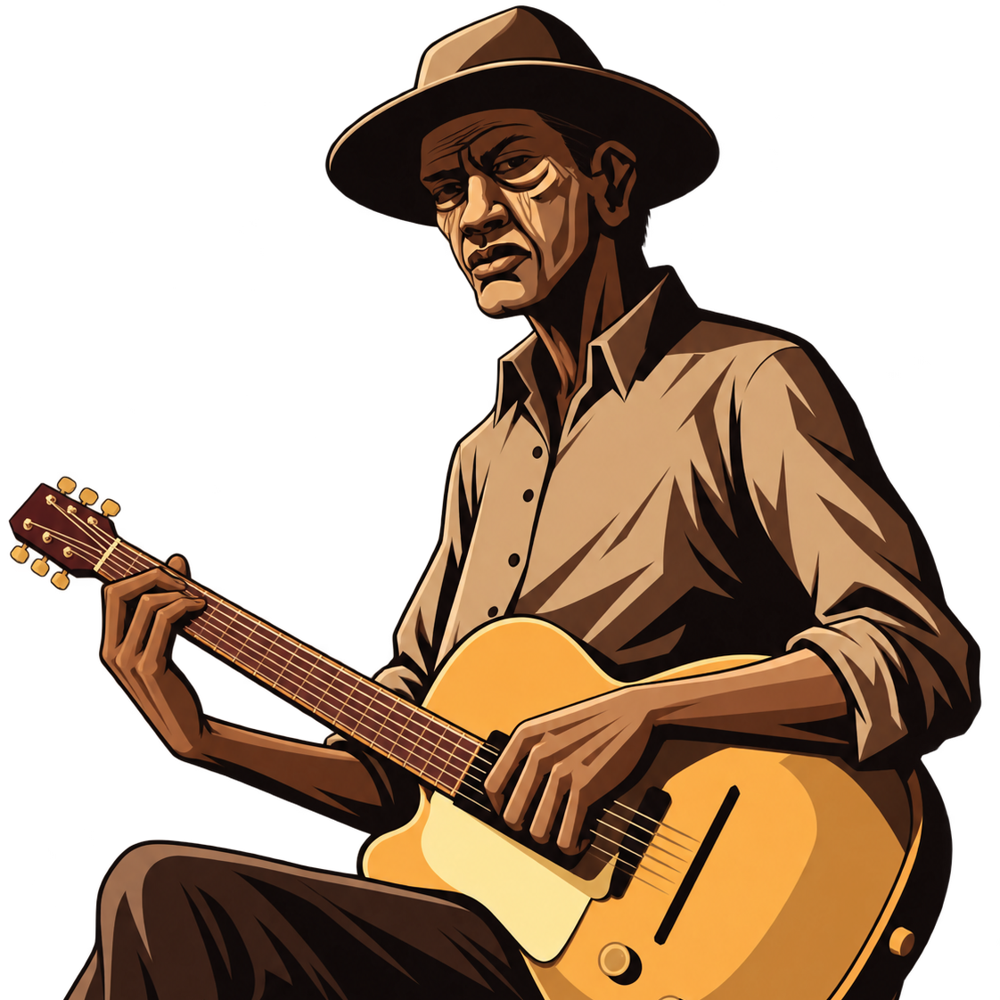

A little wild.
Simply drawn.
Icons from the frontier, made for wherever you’re headed. A small, thoughtfully drawn collection with an Old West soul.
91 icons · SVG format · Free & open source

Icons from the frontier, made for wherever you’re headed. A small, thoughtfully drawn collection with an Old West soul.
91 icons · SVG format · Free & open source
